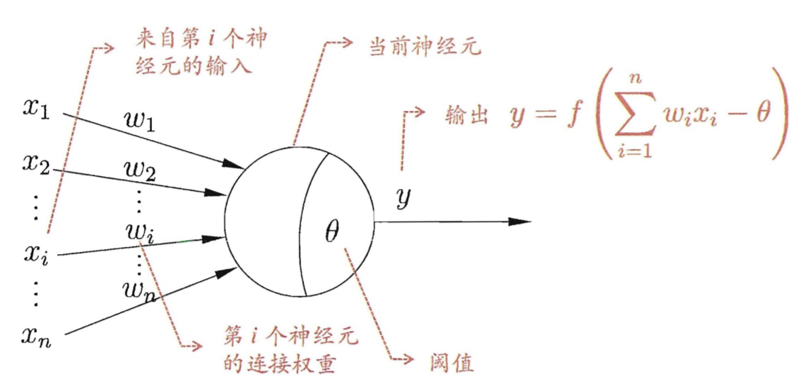

感知器及训练法则
感知器
感知器是人工智能和深度学习最底层的基础。感知器的结构包括以下三部分：
- 输入向量：$X=\left[x_{0}, x_{1}, \ldots, x_{n}\right]^{T}$
- 权重：$W=\left[\omega_{0}, \omega_{1}, \dots, \omega_{n}\right]^{T}$，其中$\omega_0$称为偏置
- 激活函数：$O=\operatorname{sign}(n e t)$（激活函数还有很多种类）

这个感知器相当于一个分类器，它使用高维X向量作为输入，在高维空间对输入的样本进行二分类：当$\mathbf{W}^T\mathbf{X}>\theta$时，$O=1$，相当于样本被归为其中一类，否则，$O=-1$，相当于样本被归为另一类，这两类的边界在哪里呢？其实就是$\mathbf{W}^T\mathbf{X}=\theta$，这是一个高维的超平面。
感知器的训练法则
如果在一组数据当中要找到一个最好的分界点，在寻找最优解的过程中我们采用了这样一个思路：
对于每一个训练样例$<X,t>$，先使用当前的权重计算感知器的输出o；再对于每一个权重进行如下的更新：
$$
\omega_{i} \leftarrow \omega_{i}+\Delta \omega_{i}
$$$$
\Delta \omega_{i}=\eta[t-o] x_{i}
$$其中，X为输入向量，t为目标值，o为感知器在当前权重下的输出，$\eta$为学习率。
当训练样例线性可分时，反复使用上面的方法，经过有限次训练，感知器将收敛到能正确分类所有样例的分类器。在训练样例线性不可分时，使用delta法则。它是使用梯度下降（gradient desvent）的方法在假设空间中搜索可能的全向量，寻找到最佳拟合训练样例的权向量。
其实说白了，所谓感知器的训练法则就是在原本的权重的基础上进行相应权重的修改。经过反复的迭代，直到我们最终的模型效果达到最好。
梯度下降与损失函数
其实就是对多元函数进行对每一个参数的求偏导数运算。偏导数组成的向量就是梯度向量，其指向函数增长最快的方向。因此，负梯度向量$-\nabla f$，则指向函数下降最快的方向。
当训练样例不可分的时候，我们无法找到一个超平面，令感知器完美分类训练样例，但是我们可以近似的分类他们，而允许一些小小的分类错误。为了让这些错误最小，首先要参数化描述这个错误，这就是所谓的损失函数（误差函数），让感应了感知器目标输出和实际输出之间的误差。最常用的误差函数为L2误差（各元素平方和的平方根）：
$$
E(w)=\frac{1}{2} \sum_{d \in D}\left(t_{d}-o_{d}\right)^{2}
$$
其中，$d$为训练样例，$D$为训练样例集，$t_d$为目标输出，$o_d$为实际输出。
上面我们介绍的方法属于最基本的全局梯度下降的方法，这种方法在每一次迭代中必须计算出所有的梯度方向，再在这些可能性当中找到最小的。这样就带来了几个问题，其中一个问题就是这样的计算非常消耗资源。为了解决这个问题我们可以使用增量梯度下降（incremental gradient desvent）亦即随机梯度下降（stochastic gradient descent，SGD）。这种方法并不是在每次迭代中计算全部的可能性，而是随机的找出一种可能，然后进行迭代。这种方法显著的减少了计算消耗，并且也能很快的收敛到最优解。
我们知道在现实问题中，我们所定义出来的损失函数一般都是一个高维的超曲面，一般非常难以满足全局的凹凸性，那么我们应该采取什么办法来避免求解数值解的时候陷入局部最优解呢？我们可以使用一种在实际工作中经常会使用到的梯度下降算法–小批量随机梯度下降算法。小批量随机梯度下降（Mini-Batch SGD）算法的基本思想是：每次迭代使用一小批固定尺寸（BS：Batch Size）的样例来计算权重的增量，然后再更新权重值。这种算法可以更快的高效的进行梯度的求解，与模型的更新迭代。